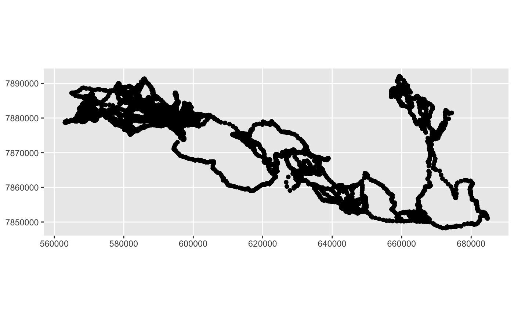

vignettes/stmove_vignette.Rmd
stmove_vignette.RmdThe stmove package builds upon several other analytics and visualization packages to offer the user a straight-forward user interface and a more digestible report of a set of high-level analyses frequently undertaken to describe animal movement data. To take full advantage of the build_report function, the input data needs to be a regularized trajectory, meaning that geospatial fixes need to occur at regular intervals throughout the period of interest. Often, movement data collected in the field will not satisfy this requirement. This means that some pre-processing may be necessary, and the stmove package offers a few utility functions to aid in the preparation of the movement tracks.
This tutorial will cover these utility functions, taking a raw trajectory from its original form to a regularized path. Using the result of this pre-processing, we will cover some of the functionality offered by the build_report function and walk through the final report that it creates. The tutorial is conducted in RStudio to demonstrate the user interface elements of the package, but it can be run without this feature in native R.
For this tutorial, we will use an elephant trajectory from Southern Africa. The individual (AG195) was tracked between July 2009 and January 2012, resulting in nearly 130,000 relocation points.
## datetime longitude latitude speed direction temperature
## 1 7/28/09 12:22 15.91854 -19.17744 0.173748675 227 0
## 2 7/28/09 13:00 15.91486 -19.17824 0.084056845 241 0
## 3 7/28/09 13:01 15.91483 -19.17827 0.004475778 270 0
## 4 7/28/09 13:20 15.91478 -19.17828 0.033818563 270 0
## 5 7/28/09 13:21 15.91478 -19.17827 0.000776000 270 0
## 6 7/28/09 13:40 15.91479 -19.17826 0.019097745 270 0
## altitude month hour id sensor distance timelag angle sex age
## 1 1116 7 12 AG195 unknown 396.1469781 38 257.01825 m ad
## 2 1123 7 13 AG195 unknown 5.0434107 1 224.24588 m ad
## 3 1129 7 13 AG195 unknown 5.1023869 19 254.55993 m ad
## 4 1119 7 13 AG195 unknown 2.0291138 1 356.99631 m ad
## 5 1129 7 13 AG195 unknown 0.8848304 19 75.17437 m ad
## 6 1132 7 13 AG195 unknown 1.1458647 1 10.69714 m adFor our purposes here, we will focus on the year-long period between January 1, 2010 and December 31, 2010. The original data collection procedure involved alternative fix intervals of 1 minute and 19 minutes. This means that every other point will be separated by approximately 20 minutes. We will eliminate the intevening short fix intervals for the high-level analyses here by making use of the regularize function.
period_of_interest <- lubridate::interval(ymd("2010-01-01"), ymd("2010-12-31"))
AG195_2010 <- AG195_raw %>%
dplyr::mutate(datetime = as.POSIXct(strptime(as.character(datetime),
tz='GMT', format='%m/%d/%y %H:%M'))) %>%
dplyr::filter(datetime %within% period_of_interest)Here, we have mutated the datetime column (using mutate) to strip the datetime character strings and transforms the values into recognizable POSIX datetime stamps. From there, we filter the resulting column using an interval object created using the lubridate package. This subset of the data contains 51832 rows and 16 columns.
Those first five rows of the data above illustrated the fact that there are quite a few data columns that may be useful for in-depth analyses, but are somewhat extraneous for our purposes here. The key elements that we will want to maintain during pre-processing are the datetime stamp, the x and y coordinates, and a unique identifier for any population-level analyses we want to perform later.
The spatial position of the animal in this case has been collected in the form of latlong coordinates, but it will be much more useful in a projection like UTM where the units are more easily interpretable. Since we know that this data was collected in UTM Zone 33S, we can easily change its projection during preprocessing.
The easiest way to perform such reprojections is with the sf package, which works well with the tidyverse tools, like those used above for manipulating the data frame. We’ll want to use the st_as_sf function, passing the first two columns as our coords argument and 4326 (the EPSG value for the latlong projection in WGS84) as the crs argument.
AG195_sf <- AG195_2010 %>%
st_as_sf(coords=1:2, crs="+init=epsg:4326") %>%
st_transform(crs = "+init=epsg:32733")If we have a general idea of what the track should look like in space, we can plot the result of that function, which created a new geometry column, in order to verify that the points are correctly projected as latlong coordinates.

That appears to be correct, and we can print out the head of our new dataframe to see that the geometry column is in UTM units rather than decimal degrees:
## Simple feature collection with 6 features and 2 fields
## geometry type: POINT
## dimension: XY
## bbox: xmin: 576546 ymin: 7881841 xmax: 576566.6 ymax: 7881876
## epsg (SRID): 32733
## proj4string: +proj=utm +zone=33 +south +datum=WGS84 +units=m +no_defs
## datetime id geometry
## 1 2010-01-01 00:00:00 AG195 POINT (576566.6 7881876)
## 2 2010-01-01 00:01:00 AG195 POINT (576566.5 7881876)
## 3 2010-01-01 00:20:00 AG195 POINT (576553.1 7881841)
## 4 2010-01-01 00:21:00 AG195 POINT (576553.6 7881842)
## 5 2010-01-01 00:40:00 AG195 POINT (576546 7881845)
## 6 2010-01-01 00:41:00 AG195 POINT (576548.2 7881841)Perfect! The next thing we’ll notice about the dataset here is the fact that the positional fixes are not exactly regular in the normal sense. Even the much-reduced view offered by the head function demonstrates that fixes were actually captured at two intervals, 1 minute and 19 minutes. This means that every other point is separated by 20 minutes, and that will be the regular interval we aim for as we move forward with this analysis. There may be some very interesting information in those 1 minute intervals, but for the sake of the broad-scale analyses we will be conducting with stmove, it is very reasonable to eliminate these intervening points.
One way to go about regularizing this path is the regularize utility function provided by stmove. In order to use this function, we’ll need to revert from the simple features geometry column that we’ve just created to x and y coordinates. The data frame that we’ll need to feed into the regularize function consists of those two correctly projected coordinate columns, a datetime column (renamed “date” to appease the inner workings of the function), and the id column (not particualrly relevant here, but it would be important to maintain if we were preprocessing/analyzing multiple individuals simultaneously). We’ll also eliminate the geometry column by setting it to NULL. This final data frame will have 51832 rows and 4 columns.
AG195_reg <- AG195_sf %>%
mutate(x = st_coordinates(AG195_sf)[,1],
y = st_coordinates(AG195_sf)[,2]) %>%
mutate(date = datetime) %>%
dplyr::select(x, y, date, id)
st_geometry(AG195_reg) <- NULL
AG195_reg <- stmove::regularize(AG195_reg, dt=20, units="min")The results is a much more informative, temporally-regularized path. In addition to the coordinates, timestamps, and id columns we fed into the function, we have several additional columns that were created when the trajectory was converted to an ltraj object in the regularize function. One last step we’ll need to undertake is to determine if that regularization process (or the data collection process itself) resulted in any gaps in the data. The regularization function will fill in NA values for the x and y coordinates at timestamps that we expect to have a reading, but where none is available. Using a table, we can ascertain the frequency of such gaps in our path:
##
## FALSE TRUE
## 26178 31It appears we have only 31 missing points! That is astoundingly few for a trajectory that has 26209 points! We’ll still need to fill in those gaps to make sure our downstream analyses work. One way to do that is with the kalman utility function provided by stmove.
## Warning in StructTS(data, ...): possible convergence problem: 'optim' gave
## code = 52 and message 'ERROR: ABNORMAL_TERMINATION_IN_LNSRCH'##
## FALSE
## 26280This function may take some time to run, but its doing some extraordinary things under the hood. Using all of the known points and the distribution of step lengths between them, the algorithm interpolates any missing points that we have. This process should be used with some discernment, however. In this case, the proportion of missing points to known points is so low that we should have no problem filling in those gaps, but other trajectories may be riddled with missing points once they have been temporally regularized. In such cases, the interpolation process may lose some of its integrity, as the model has less information with which to predict those unknown values. We would not recommend relying upon the Kalman smoothing approach implemented in stmove if the proportion of missing points is around 5%.
We can take a look at our final data frame (which should look a lot like it used to, but perhaps slightly sparser). We should be wary of any peculiar outliers that may have appeared, as these may be examples of the Kalman smoother misbehaving. Note that the plot below may be somewhat distorted compared to the plot we made earlier. The reason is that we are no longer plotting projected geographic points here, we are simply plotting x and y values. Even so, we should be able to pick out any outliers, which is the main reason for building this intermediate plot following the Kalman smoothing process.
These steps have provided a suitable path for running the build_report function offered by stmove. The result of this is a PDF file with several interesting broad-scale analyses of the path in question. We simply designate the data frame on which the analyses will be conducted, the name or filepath of the output file, and the projection (in our case “+init=epsg:32733”), and the report will be created with rolling and diurnal statistics, a klocoh home range, and a wavelet diagram. Each of these provides potentially interesting insights that we will discuss below.
The build process might take a little while, and we would expect that time to scale with the length of the trajectory, but even with the intensive wavelet and home range calculations, the report is done within a matter of minutes! Here, we have set the wavelet argument to TRUE, but the default is NULL, so if you want to see that, you’ll need to add that argument on top of the required df, path, and proj4 arguments. The default arguments for stats are both “rolling”" and “diurnal”“, but we will add”lunar" to the set, but we won’t add “seasonal” because we would also need to input a vector of the start dates of each season. For our purposes here, the other statistics will be sufficient. The default argument for construct is “klocoh” (for the k local convex hull method), which will also be perfect for our analyses here. One could alternatively (or additionally) select “akde” for the adaptive kernel density estimation approach to constructing the home range.